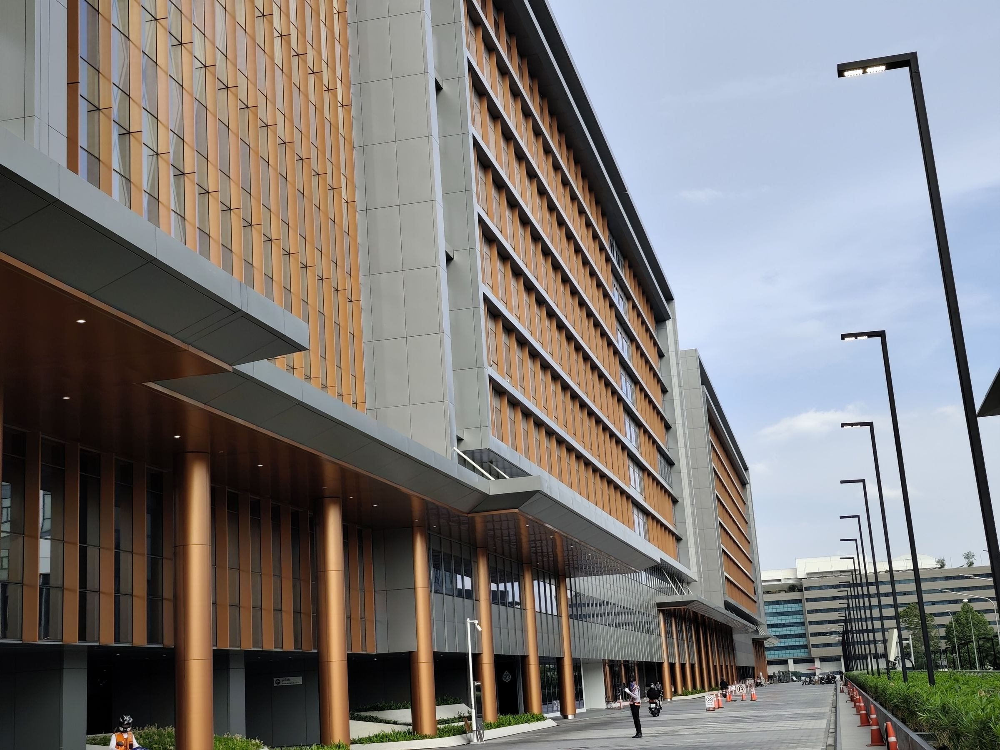

วิสัยทัศน์ พันธกิจ
วิสัยทัศน์และพันธกิจของสำนักงานราชบัณฑิตยสภา

สำนักงานราชบัณฑิตยสภา
วิสัยทัศน์
สำนักงานราชบัณฑิตยสภาเป็นสถาบันหลักของเครือข่ายทางปัญญาแห่งชาติ และเป็นองค์การพัฒนาความรู้ที่สามารถเป็นแหล่งอ้างอิงทางวิชาการ
Mission
พันธกิจ
สำนักงานราชบัณฑิตยสภามีอำนาจหน้าที่ดังต่อไปนี้
- ค้นคว้า วิจัย และเผยแพร่ผลงานค้นคว้า วิจัย และบำรุงสรรพวิชา แล้วนำผลงานที่ได้สร้างสรรค์ออกเผยแพร่ให้เป็นคุณประโยชน์แก่ประเทศและประชาชน
- แลกเปลี่ยนความรู้และประสานงานทางวิชาการติดต่อแลกเปลี่ยนความรู้และประสานงานทางวิชาการกับองค์การปราชญ์และสถาบันทางวิชาการอื่น ๆ ทั้งในประเทศและต่างประเทศ
- ให้คำปรึกษาทางวิชาการแก่รัฐบาลให้ความเห็น คำแนะนำ และคำปรึกษาทางวิชาการแก่นายกรัฐมนตรีหรือคณะรัฐมนตรี
- จัดการศึกษาอบรมและพัฒนาทางวิชาการจัดการศึกษาอบรมและพัฒนาทางวิชาการเกี่ยวกับภาษาไทย ภาษาไทยถิ่น และสาขาวิชาตามมาตรา ๑๐ และให้ประกาศนียบัตรชั้นสูง ประกาศนียบัตร สัมฤทธิบัตร และวุฒิบัตรแก่ผู้สำเร็จการศึกษาอบรมและพัฒนาทางวิชาการ ทั้งนี้ ตามข้อบังคับราชบัณฑิตยสภา
- ให้บริการทางวิชาการให้บริการทางวิชาการแก่ส่วนราชการ รัฐวิสาหกิจ หน่วยงานอิสระตามรัฐธรรมนูญ องค์การมหาชน หน่วยงานอื่นของรัฐ สถาบันการศึกษา หน่วยงานของเอกชน และประชาชน
- พจนานุกรมและศัพท์บัญญัติดำเนินงานเกี่ยวกับการจัดทำพจนานุกรม สารานุกรม อักขรานุกรม อนุกรมวิธาน การบัญญัติศัพท์วิชาการสาขาต่าง ๆ รวมทั้งการจัดทำพจนานุกรมศัพท์วิชาการภาษาต่างประเทศเป็นภาษาไทยและงานวิชาการอื่น ๆ
- อนุรักษ์และส่งเสริมภาษาไทยกำหนดหลักเกณฑ์ต่าง ๆ เกี่ยวกับการใช้ภาษาไทย การอนุรักษ์ภาษาไทย มิให้แปรเปลี่ยนไปในทางที่เสื่อม การส่งเสริมภาษาไทยซึ่งเป็นเอกลักษณ์ของชาติให้ปรากฏเด่นชัดยิ่งขึ้น
- ส่งเสริมการแปลสรรพวิชาส่งเสริมและสนับสนุนให้มีการแปลสรรพวิชาจากภาษาอื่นเป็นภาษาไทยหรือจากภาษาไทยเป็นภาษาอื่น
- สวัสดิการสมาชิกราชบัณฑิตยสภาจัดสวัสดิการ การสงเคราะห์และสิทธิประโยชน์อื่นแก่สมาชิกราชบัณฑิตยสภา ทั้งนี้ ตามระเบียบราชบัณฑิตยสภา
- ภารกิจอื่นตามกฎหมายปฏิบัติการอื่นตามที่กฎหมายกำหนดให้เป็นอำนาจหน้าที่ของสำนักงานราชบัณฑิตยสภา